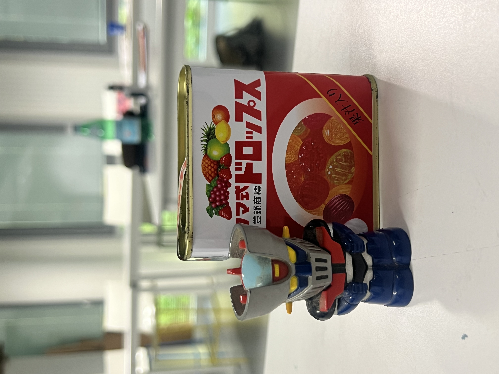
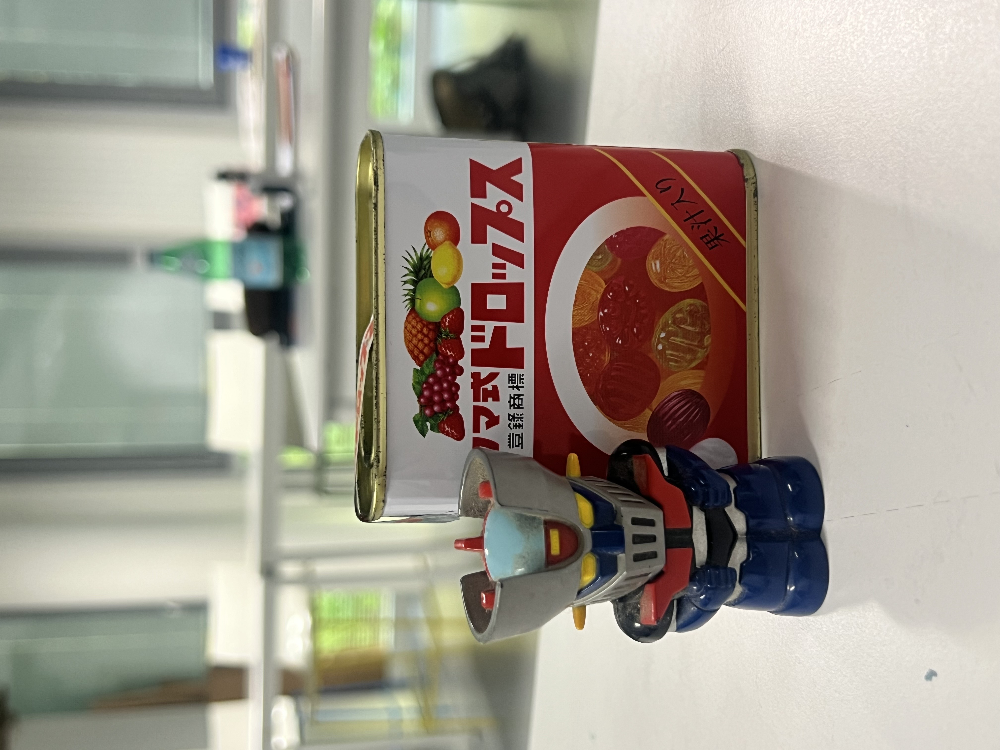

Goldorak
Ce dessin a été réalisé au crayon de couleur pendant mes cours de dessin d’observation en première année de licence design. Il s’agit d’une composition associant un briquet Goldorak et une boîte de conserve. L’exercice visait à apprendre à représenter avec précision des objets du quotidien en travaillant les volumes, les matières et les détails.